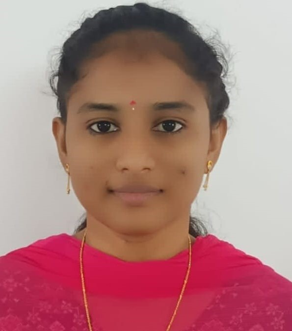

HOME
Hi, I'm Udayasri

hyderabad Phone Mail linkedin GitHUb
Python Developer | AI Enthusiast
Passionate about Python programming, web development, machine learning, and building real-world projects.
About me
I am a passionate and self-motivated Python developer currently learning full stack development, machine learning, and AI projects. I enjoy solving programming problems and creating user-friendly applications using Python, HTML, CSS, JavaScript, SQL, and Streamlit. My goal is to become a software engineer and work on innovative technologies.
Education Details
| Course | Institute | Board/university | YOP | % |
|---|---|---|---|---|
| B TECH(IT) | NRI INSTITUTE OF TECHNOLOGY | JNTU KAKINADA | 2026 | 88 |
| Intermediate | Sri chaintanya junior kalasala | SSC | 2022 | 98 |
| SSC | SIDDHARTHA VIDAYALAYAM | ssc | 2020 | 98 |
Skills
- Python
- HTML
- CSS
- JavaScript
- SQL
- OOP Concepts
- Machine Learning
- Streamlit
- Git & GitHub
projects
AI POWERED STORYTELLER
- Developed an AI-based storytelling system that generates creative and logical stories based on user prompts.
- Integrated text generation and text-to-speech features to produce spoken narratives
- Used Python and deep learning techniques to enhance story coherence and engagement.
HYBRID DEEPLEARNING FOR BRAIN ABSCESS AND VISULIZATION (MRI)
- Developed a deep learning system to detect brain infections from MRI images using multiple models(ResNet, DenseNet, Inception).
- Improved prediction performance through image preprocessing, data cleaning, and data augmentation techniques.
- Implemented Grad-CAM visualization to highlight infected regions for better understanding of results.
- Built a Flask-based web application for real-time MRI upload, prediction, and performance evaluation using metrics like a confusion matrix.
Certificates
- APSCHE-Artificial Intelligence and Machine Learning
- Cognitive Class.ai -Prompt Engineering
- Infosys Springboard - Python Programming
- Edunet Foundation - AI and Data Analytics (Focused on Green Skills)
- Coursera-Python for Data Science, AI & Development
- Oracle -Oracle Cloud Infrastructure AI Foundations Associate